Séparateurs conditionnels & redirections
الفواصل الشرطية وإعادة التوجيه
الشرح بالعربية
لكل عملية 3 قنوات: stdin=0، stdout=1، stderr=2. < إدخال من ملف، > إخراج مع استبدال، >> إلحاق، 2> للأخطاء، &> للكل، << here-document. الأنبوب | يمرر stdout كمدخل للأمر التالي مثل ls -l | wc -l. الفواصل: ; تعاقب دائمًا، && ينفّذ التالي فقط إذا نجح السابق، || إذا فشل. ترتيب الشروط وأقواس here-doc من نقاط الامتحان.
Illustrations de la leçon
18 planches · cliquez pour agrandir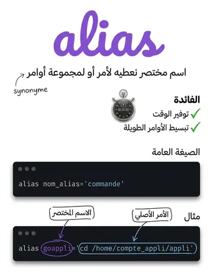
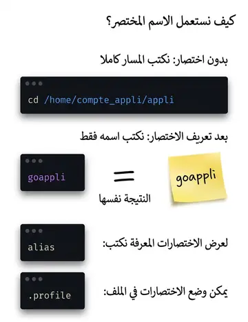
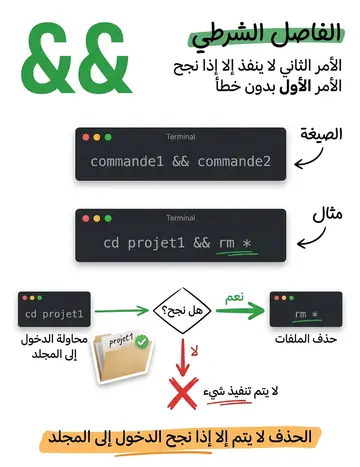
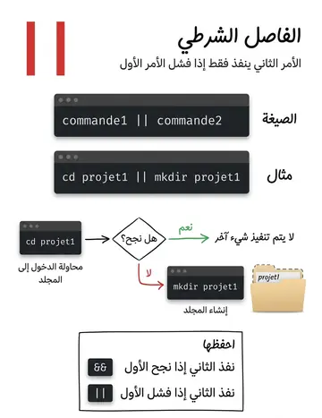
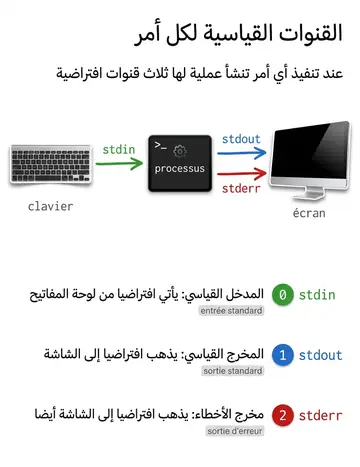
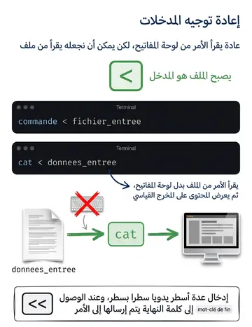
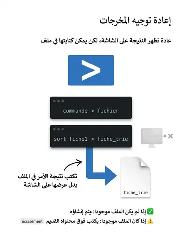
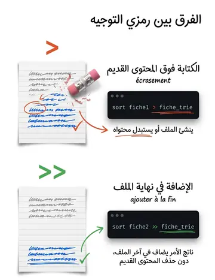
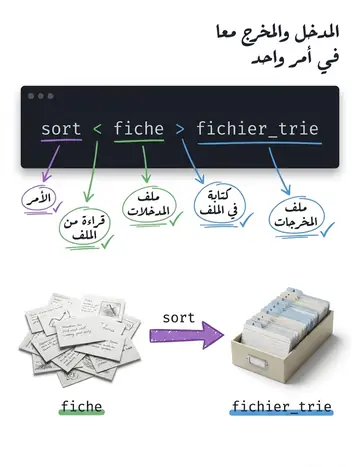
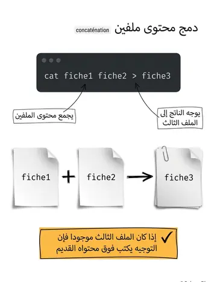
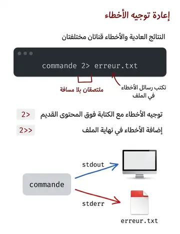
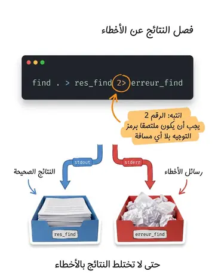
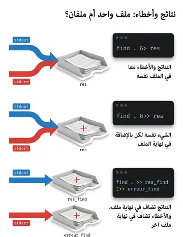
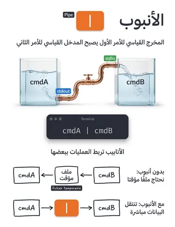
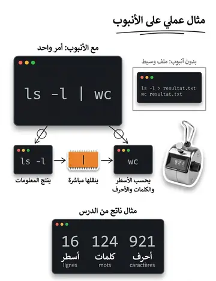
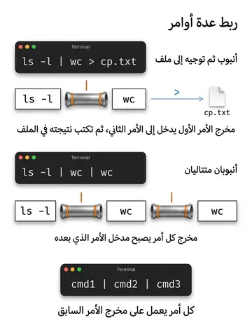
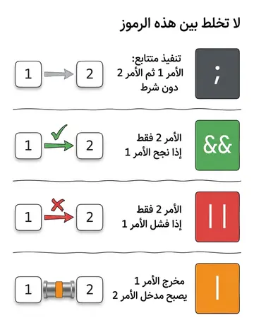
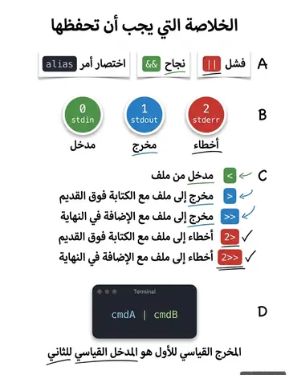
Contenu de la leçon
Le cours en français, avec les termes techniques et les exemples.
REDIRECTION DES
ENTRÉES/SORTIES
Il est possible de contrôler la séquence d’exécution de commandes en utilisant des séparateurs conditionnels.
Le séparateur && permet d’exécuter la commande qui le suit, si et seulement si la commande qui le précède a été exécutée sans erreur.
Le séparateur || permet d’exécuter la commande qui le suit si et seulement si la commande qui le précède a été exécutée avec erreur.
LES SÉPARATEURS CONDITIONNELS DE
COMMANDES
Exemple :
Suppression des fichiers si la commande cd projet1 a été correctement exécutée.
$ cd projet1 && rm *Exemple :
Si le répertoire projet1 n’existe pas, alors il sera créé par la commande mkdir.
$ cd projet1 || mkdir projet1LES SÉPARATEURS CONDITIONNELS DE
COMMANDES
LES ENTRÉES SORTIES D’UN PROCESSUS
Lors de l’exécution d’une commande, un processus est créé.
Par défaut le processus:
Lit ses données d'entrée à partir de l’entrée standard (par défaut le clavier).
Écrit sa sortie (les résultats et les erreurs) dans la sortie standard (par défaut l’écran).
LES ENTRÉES SORTIES D’UN PROCESSUS
Ces canaux de communications sont désignés par les fichiers :
« stdin » : pour l’entrée standard, identifiée par l’entier 0.
« stdout » : pour la sortie standard, identifiée par l’entier 1.
« stderr » : pour la sortie d’erreur standard, identifiée par l’entier 2.
Il est possible de rediriger les entrées/soties standards des commandes afin que la lecture se fasse à partir d’un fichier et que l’écriture se fasse dans un fichier.
On peut rediriger l’entrée standard d’une commande afin que la lecture se fasse à partir d’un fichier grâce au symbole « < »
commande < fichier_entree
La commande effectue ses entrées à partir du fichier «fichier_entree »
Exemple :
% cat < donnees_entreeLa commande lit le fichier «donnees_entree» et l’affiche sur la sortie standard, au lieu de lire les données au clavier.
REDIRECTION DE L’ENTRÉE STANDARD
On peut rediriger la sortie standard d’une commande afin que l’écriture se fasse dans un fichier grâce aux symboles « > » ou « >> ».
commande > fichier_sortie commande >> fichier_sortie
Si le fichier « fichier_sortie» n’existe pas, alors il sera créé.
Si le fichier « fichier_sortie» existe, alors:
Si le symbole « > » est utilisé dans ce cas le fichier «fichier_sortie» sera écrasé et remplacé par la nouvelle sortie standard de la commande.
Si le symbole « >> » est utilisé, dans ce cas la nouvelle sortie standard sera rajoutée à la fin du fichier « fichier_sortie ».
REDIRECTION DE LA SORTIE STANDARD
REDIRECTION DE LA SORTIE STANDARD
Commande
La touche « >> » redirige la sortie standard à la fin d'un fichier et le crée s'il n'existe pas.
Exemple:
On trie le fichier « fiche1 » et on écrit le résultat dans le fichier « fiche_trie » au lieu d’afficher le résultat sur l’écran.
% sort fiche1 > fiche_trieOn trie le fichier « fiche2 » et on écrit le résultat à la fin du fichier « fiche_trie ».
% sort fiche2 >> fiche_trieRemarque:
On peut rediriger l’entrée et la sortie en même temps.
Exemple:
Trier le fichier « fiche » et écrire le résultat dans le fichier « fichier_trie »
% sort < fiche > fichier_trieREDIRECTION DE LA SORTIE STANDARD
La touche « << » passe la console en mode saisie au clavier, ligne par ligne.
Toutes ces lignes seront envoyées à la commande lorsque le motclé de FIN aura été écrit.
REDIRECTION DE LA SORTIE STANDARD
Remarque :
La commande « cat » permet de faire la concaténation des fichiers en redirigeant la sortie standard à l’aide des opérateurs de redirections « > »
ou « >> ».
Exemple:
Concaténer les fichiers « fiche1 » et « fiche2 » dans « fiche 3 »
% cat fiche1 fiche2 > fiche3REDIRECTION DE LA SORTIE STANDARD
Lors de l’exécution d’une commande, des messages d’erreurs peuvent être affichés à l’écran si un problème survient en cours d’exécution.
On peut rediriger la sortie des messages d’erreurs dans un fichier. Ceci permet d’éviter d’avoir un mélange entre les résultats normaux et les messages d’erreurs dans une même sortie (standard ou fichier).
Ceci peut se faire grâce aux chaines « 2> » ou « 2>> »
REDIRECTION DE LA SORTIE D’ERREURS STANDARD
(STDERR)
Syntaxe :
commande 2> fichier_sortie commande 2>> fichier_sortie
Comme pour la redirection de la sortie standard,
Si le fichier sortie n’existe pas alors il sera créé.
Si le fichier sortie existe alors:
Si on utilise la chaine « 2> » alors le fichier sera écrasé et remplacé par la nouvelle sortie standard.
Si on utilise la chaine « 2>> » , alors la sortie standard se rajoute à la fin du fichier sortie.
REDIRECTION DE LA SORTIE D’ERREURS STANDARD
(STDERR)
Exemple:
On exécute la commande « find » sans arguments. Les résultats de la recherche sont redirigés vers le fichier «res_find»
alors que les messages d’erreurs (par exemple on ne peut pas explorer un répertoire protégé en lecture) seront redirigés vers le fichier «erreur_find ».
% find .> res_find 2> erreur_find% find . >> res_find 2>> erreur_findRemarques :
Pas d’espace entre le "2" et le "> »
Les résultats et les erreurs peuvent être redirigés vers un même fichier grâce aux chaines «&>» ou « &>> »
Exemples:
% find . &>res% find . &>>resREDIRECTION DE LA SORTIE D’ERREURS STANDARD
(STDERR)
Les pipes (tubes) permettent de rediriger la sortie d’un processus vers l’entrée d’un autre. Les processus s’exécutent en parallèles.
Syntaxe :
cmdA | cmdB
« cmdA » et « cmdB » sont deux commandes.
Le symbole « | » est appelé « pipe ». Il permet de relier deux commandes entre elles.
La sortie standard de la commande « cmdA » est utilisée comme entrée standard de la commande « cmdB ».
LES TUBES (PIPES)
Exemple :
Exécuter la commande « ls -l » et rediriger la sortie de la commande vers le fichiers « resultat.txt »
% ls -l > resultat.txtCompter le nombre de lignes, le nombre de mots et le nombre de caractères du fichier « resultat.tx » et rediriger le résultat vers le fichier « cp.txt »
% wc < resultat.txt > cp.txtou
% wc resultat.txt > cp.txtLes deux commandes peuvent être combinées pour élaborer une seule:
% ls -l | wc > cp.txtLES TUBES (PIPES)
% ls -l | wc16 124 921
Compte le nombre de lignes, de mots et de caractères de la sortie de la commande « ls-l » ( résultat: 16 lignes, 124 mots et 921 caractères).
Exemple :
Compte le nombre de lignes, de mots et de caractères de la sortie de la commande « ls -l | wc »
% ls -l | wc | wc1 3 24